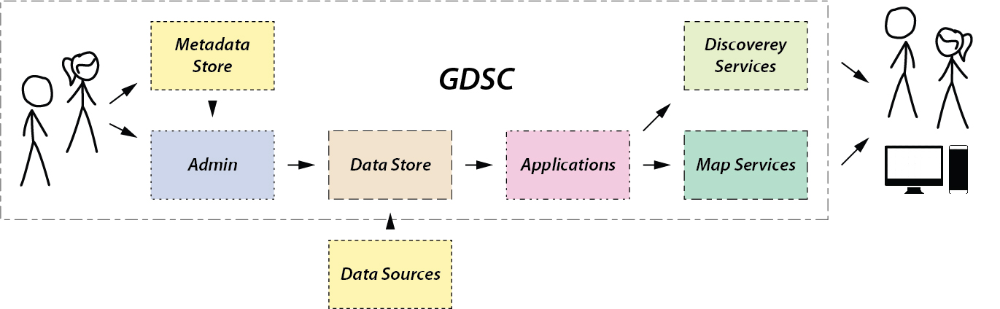
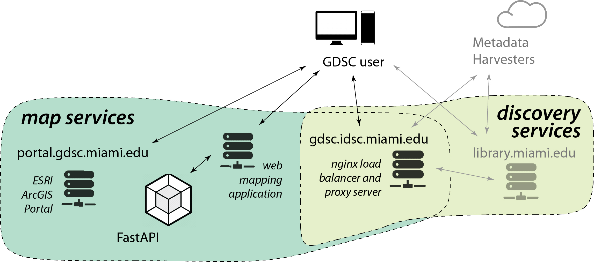
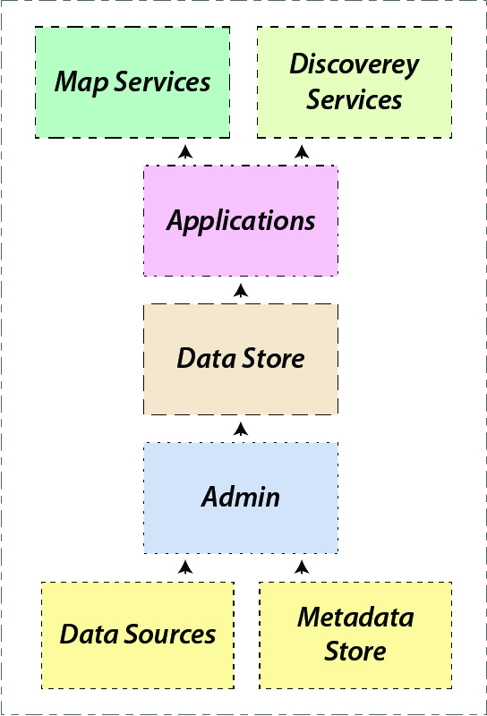
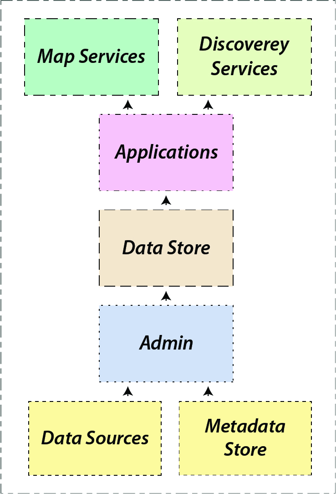
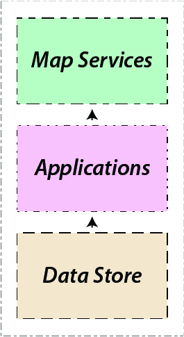
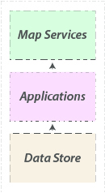

GDSC
Geospatial Digital Special Collections
Geospatial Digital Special Collections
As a key component in efforts to understand the human condition, geospatial datasets inform and support basic research, decision making, urban planning and analytics, the production of maps, and other forms of geovisualization.
These activities are based on widely available sources of geospatial data that span scales from global to local, such as Google Earth, OpenStreetMap (OSM), the Census Bureau’s American Community Survey (ACS), the Miami-Dade open data portal, and so on.
Geospatial datasets are also increasingly produced as the result of academic research and other planning activities.
But discovery, access, and re-use of relevant data can be challenging and time-consuming. Researchers must locate and acquire data sets from varied institutions, understand metadata and analytical limitations, and harmonize disparate file formats and geographies.
Such data curation requires analytical skill and often duplicates tasks that slow scientific discovery.
As a result of these difficulties, geospatial data struggle to be Findable, Accessible, Interoperable, and Reusable, or FAIR.
This is not to discount decades of work by government agencies and private data aggregators, but GIS data still suffer from:
- Multiple sources and standards
- Difficult harmonization
- Repeated curation work
GDSC
Highly curated collections that are findable, accessible, interoperable, and reusable -- FAIR.
- Container based architecture for data as a service
- Centrally located metadata store
- Reusable structured data packages
- Transparent provenance of ETL process
- Metadata guided by (geo)DCAT
- Apache SOLR for discovery layer
- Flexible service provision with proven technologies
Basically a Repository?

stick figure image credit: XKCD https://xkcd.com/927

XKCD https://xkcd.com/927
A Container Based Approach
GDSC system requirements:
- Map and data services that can be consumed by humans or machines.
- User interfaces for the discovery and consumption of spatial data.
- Applications that meet a variety of needs to serve both endpoints for data services and interfaces for human users.
- Back-end datastore that is sustainable and resilient.
- Management tools for collection building and maintenance.


Local Human and Machine Resources
stick figure image credit: XKCD https://xkcd.com/927
Flexibility and Scaleability
Federated collections
serving other institutional
or regional needs


serving other institutional
or regional needs
Decoupled components
application specific requirements


application specific requirements
GDSC
GIS, Data Curation, and Storytelling
- Quality metadata
- Proper sharing licenses/agreements
- Interdisciplinary problem solving
- Synthetic analysis and visualization
- Relevant applied science
A well constructed GIS is a special collection made
purposefully to curate cartographic exhibits with
dynamic geospatial data.
GDSC catalog
GDSC github
Thanks!
Timothy B Norris
tnorris@miami.edu
tnorris@miami.edu
Coda: data curation is a human activity. There is no way to express gratitude to all of the people who have supported this work - you know who you are.